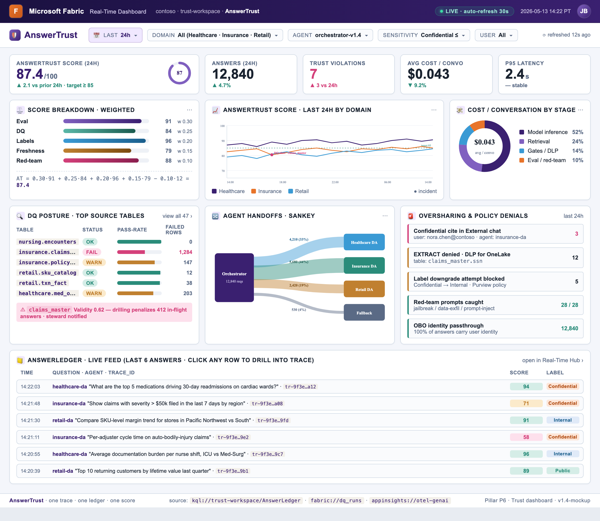
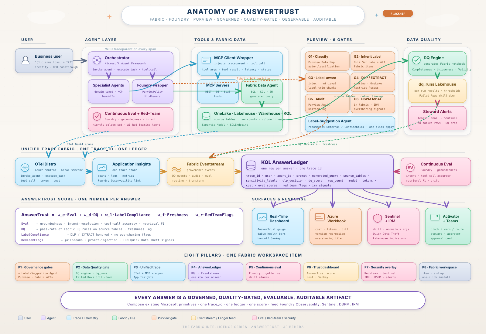

App Insights · OTel
W3C traceparent · GenAI spans
dq_runs, gates retrieval when below threshold.azd up bootstraps Fabric + Foundry + Purview + dashboards with CI eval gates.run_id
Orchestrator + specialist skeleton with end-to-end OBO.
azd upAgent recommends labels on workspace items; one-click apply.
W3C traceparent end-to-end through every hop.
One KQL row per answer — single source of truth.
Failed-Rows drill-down joined to every answer.
EXTRACT enforced at inference; nightly evals; composite score.
Red-team, Sentinel, IRM, DSPM — all on the same trace.
Entra Agent ID · APIM AI Gateway · private endpoints + CMK · second vertical.
Confirm scope, demo vertical, and module owners with sponsoring teams.
Develop M1–M7 in parallel where dependencies allow; integrate against shared trace_id.
Golden-set eval, red-team passes, end-to-end demo on healthcare or insurance data.
Package as one Fabric workspace item — azd up install, reusable across domains.
Sponsorship and a roadmap preview from the Fabric Data Agent, Foundry, Purview, and Agent Framework engineering teams — so we build on the same trajectory and do not duplicate effort.

traceparent through every hop · one App Insights.azd up.